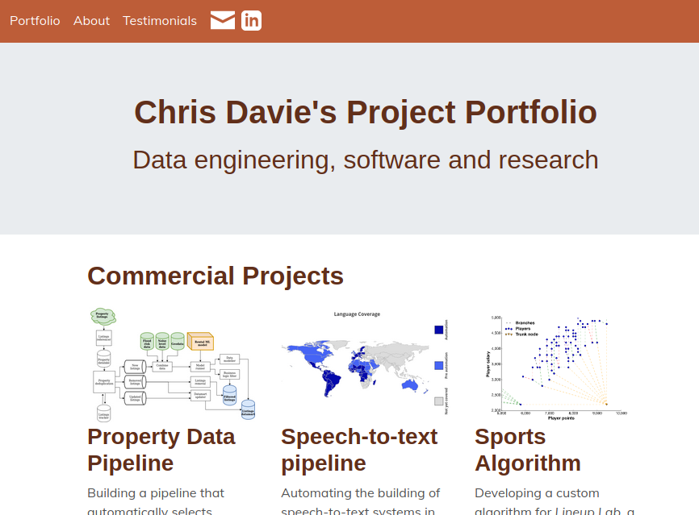

My portfolio
Making my website prettier and easier to maintain
I updated my website to look pretty, more up to date and be straight forwards to maintain
Skills employed: Bootstrap, Jinja, Python, Invoke, project design, Linux
Front page of my website, including images of projects I've completed.
My portfolio website
I’m job hunting again, and figured I could stand out - my portfolio showcases things I’ve built. But it needed updating - it was black and white, the layout dated and could easily work better on phones. I also know more about software, and I wanted to learn about building websites.
Maintaining my old portfolio website was cumbersome - I’d add new pages by copying and pasting the code. Quick for new pages, but to make change across multiple pages - the nav bar or the colour scheme, for example - I had to change each page by hand. I just didn’t bother.
I decided to both update the website, and make it easier to maintain in future.
Approach
I decided on rendering static pages from templates - a simple extension of my previous approach, only needing me to learn templating languages.
There were 3 stages. Firstly, I needed to pull the data from my old website. Secondly, I’d need to put that data into a standard format. Finally, I’d need a website template to dump the data into - allowing me to generate the website.
I worked one topic page at a time, producing a working page after each topic. This let me solely build features I needed, and I had a page to check and improve after each topic. I also learnt more rapidly - smaller problems, easier to fix.
There were costs - I rejigged the data format - new pages had different needs. A little time consuming, but these changes were small.
Overall, the regular progress, clear deliverables and not building more than I need outweigh the costs of not having a detailed plan at the start.
Technologies
Having decided on an approach, I chose the specific tools.
I learnt some new tools - the Jinja templating language renders the html pages from my data. I also needed a spell checker - there isn’t a good Python spell checker! I used a terminal spell check, one gnarly bash script.
From my previous version, I kept bootstrap - makes pretty websites quickly that work on mobile. I used Python and the invoke automation framework to render my website with a single command.
Results
You’re looking at it! It's better looking, up-to-date.
It behaves better on mobile, and is much easier to update - this page was added later, and deployed automatically. Layout updates are also straightforward - email and LinkedIn icons went in without a hitch.
Future improvements
There are things I’d do better - I accidentally invented my own markdown language. I should have used markdown, it’s designed for websites! I also should have included the front page in my iterative building - would have produced a fully functional website after each topic. I’m still working on my project organisation skills!
Overall I’m happy with how the website has turned out - looks good, communicates what I want, and hopefully will make me stand out during the job search. I’m very happy to link to it on the top of my CV.